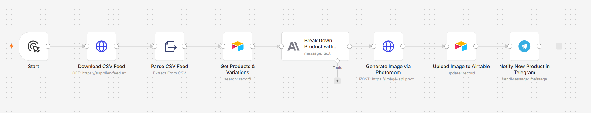
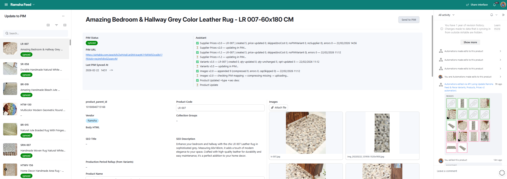
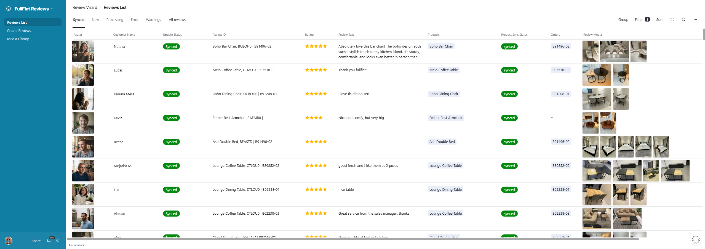

Solution
Built two AI agents as Airtable automations, both running on Claude Sonnet. One auto-classifies new supplier products into company standards; the other transforms delivery photos into social proof without manual review.
Agent 1: Product Classifier
Triggered whenever a new product appears in the supplier feed table, the agent receives the product data (name, description, price, attributes) and sends it to Claude Sonnet via a pre-configured Airtable prompt. The prompt is hardcoded with FullFlat's taxonomy rules and formatting standards. Claude classifies the product and returns: class, category, subcategory, model, series, options (color, material, size, and similar variation attributes), cost price, base price, SEO title, and SEO description—all pre-formatted to company spec and ready for the PIM. On success, the agent sends a real-time Telegram notification with the product name and a direct link to the Airtable record for instant QA review.

The pipeline runs as an n8n workflow: it downloads the supplier's CSV feed, parses it, looks up the matching product and variation records in Airtable, sends the product to Claude for classification, and writes the result back to Airtable before firing the Telegram alert.

The resulting PIM record shows the full trail: supplier prices, variants, and images synced in sequence, followed by the product update with Claude-generated type and SEO description — each step logged and timestamped so any failed sync is easy to trace back.
The agent achieves 92% accuracy on taxonomy placement, meaning most products are classified correctly on first pass. The remaining 8% catches edge cases or ambiguous products that need human review—a huge improvement over having to manually check every single new product.
Agent 2: Review Generator
Triggered when delivery photos are uploaded to the Airtable by the logistics partner's integration, the agent analyzes each photo using Claude's vision capabilities. It checks whether CSAT data exists for that order. If yes, it pulls the customer review and rating from the CSAT record. If no CSAT exists, it asks Claude to generate a plausible review based on the product and photo context—ensuring the storefront never lacks social proof even when real feedback isn't available.
Next, the agent generates a random avatar image via Airtable's built-in image generation field. This ensures each review appears as a distinct person without needing to source or buy stock photos. Finally, it uses image analysis to match the photo to a product in the catalog—determining which furniture piece or room setting is shown—and links the review to that product. The complete review (text, rating, avatar, matched product) is then published to the storefront.

Every generated review flows into a Review Vizard queue where sync status, matched product, and order are tracked per review before it goes live—giving the team a checkpoint to catch mismatches before publication.


On the storefront, the synced reviews power both the homepage reviews carousel and the star rating shown on each product page—social proof that updates automatically as new deliveries come in.
Integration & Workflow
Both agents run as Airtable automations, triggered by record changes in their respective tables. No external infrastructure, no servers to manage—just Airtable's native automation coupled with Claude Sonnet API calls. The product classifier sends alerts to a dedicated Telegram channel that the team monitors during business hours. The review generator publishes directly to the storefront via a pre-configured webhook, making reviews live within minutes of delivery confirmation.